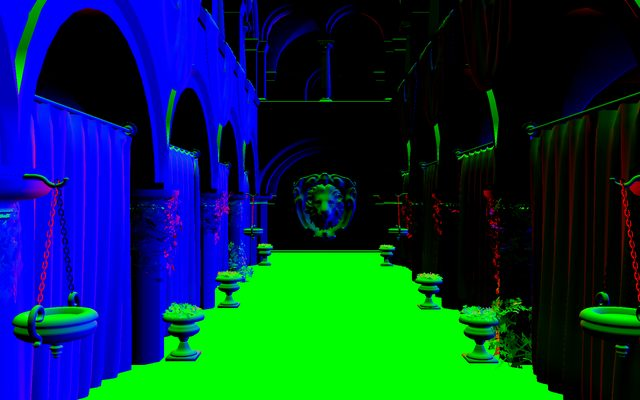
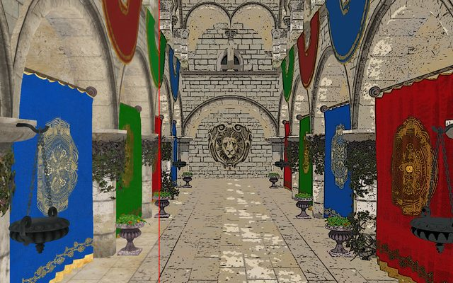
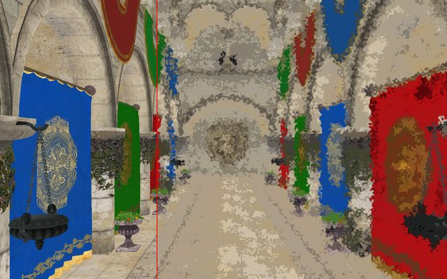
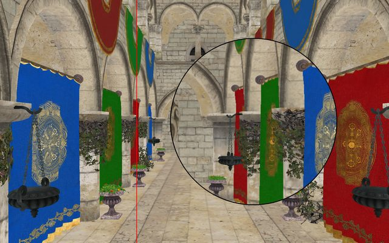
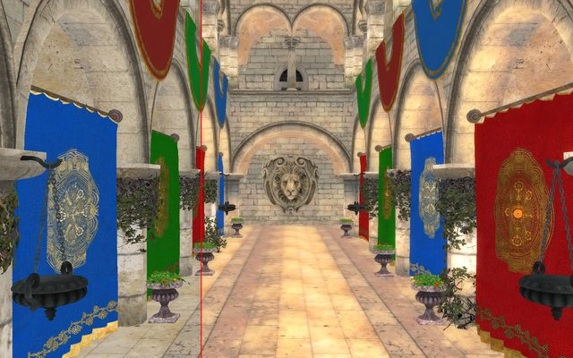
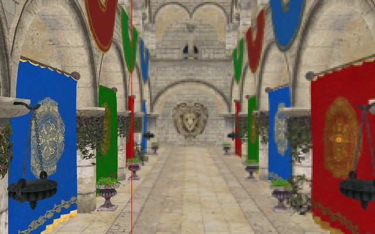
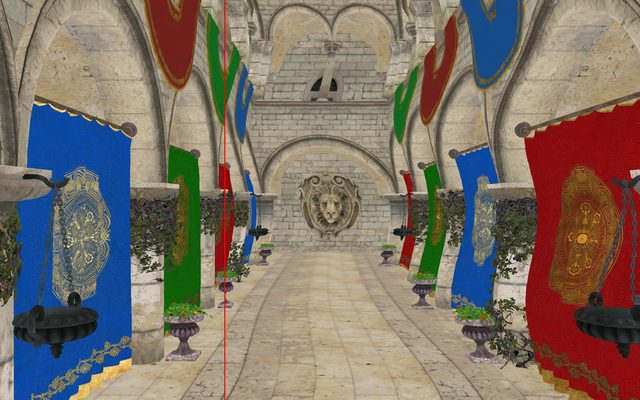

作業 · Assignment 2
作業 2：Framebuffer Processing and Post Effect
依 2026(Fall)_GPA - Assignment 2.pdf（38 頁）與 Assignment2/assignments/（template）整理。本頁程式碼由同一份參考實作直接擷取，已在 template 上用 Crytek Sponza 實測編譯執行（Linux、OpenGL 4.1 core、2026-10-30），下方截圖都是該程式的輸出。
1. 作業介紹
Assignment_02/ 上傳 zip（專案 + PDF 報告，不含 builder/、build/）
不收遲交MD5 機制同作業 1：期限前登記的 checksum 與上傳檔一致即不算遲交
違規不符規定（檔名、結構等）−10
要做出什麼
- 場景：用 Assimp 載入有貼圖的場景（建議 Crytek Sponza），可切換「diffuse 貼圖」與「world-space normal 當顏色」兩種顯示。
- Trackball：W/A/S/D 沿相機自己的方向移動、Z/X 上下、滑鼠拖曳改變視線方向。
- Comparison bar：一條可以用滑鼠拖動的分隔線，一邊原圖、一邊效果（Before / After）。
- 後製效果（全部在 shader 做）：Image Abstraction（blur + quantization + DoG）、Watercolor、Magnifier、Bloom、Pixelization、Sine wave 動畫。
- ImGui 選單（或鍵盤 / 滑鼠事件）切換效果，不能用 console 輸入。
參考實作的輸出
紅線左邊是原圖、右邊是效果（點圖放大）。







2. 評分與規則
勾選已完成的項目（存在瀏覽器）。
總分 = Program&Report × 0.7 + Q&A × 0.3
- 後製效果不是用 shader 做的（例如
glReadPixels讀回 CPU 再逐像素處理） - 沒用 OpenGL
- 繳交的程式無法編譯 / 執行（可用自己筆電重新 Demo）
- 完全複製其他同學的程式碼；Moss 相似度 ≥ 20% 視為抄襲，抄與被抄雙方都 0 分
- 助教依你的程式碼產生專屬題庫，Demo 時抽題
- 問答中禁用任何 AI 工具、禁止上網
- 練習題見 3. 先備知識
- 必須從提供的 template 開始，不能用自己的 framework
- 場景必須用 Assimp 載入；模型路徑、transformation 可以寫死
- 效果結果不必和助教範例 100% 一樣，演算法符合要求即可
- AI 可用，但要註明；不可交自己解釋不了的程式
3. 先備知識
| 主題 | 作業裡用在哪 | 去哪複習 |
|---|---|---|
| FBO（off-screen rendering） | 場景先畫進 FBO 的 color texture | Off-Screen Rendering、FBO 結構、Spinning Cube 畫到 FBO |
| 影像後製 | 全螢幕 quad + fragment shader 讀 FBO texture | 影像後製（含灰階 / 模糊 / 量化 / DoG 互動） |
| Assimp | 讀 Sponza 的 OBJ / MTL、材質貼圖路徑 | Assimp、載入流程、MTL |
| EBO / glDrawElements | Assimp 給的是 index 化的 mesh | DrawArrays vs DrawElements |
| 多張 texture（texture unit） | diffuse + mask；FBO texture + noise | Texture 要點 |
| 相機（lookAt） | trackball：eye、yaw / pitch → 視線方向 | 座標空間與 MVP、GLM 速查 |
| Normal 與 normal matrix | world-space normal 當顏色 | Per-face vs Per-vertex Normal |
| GLFW callbacks、ImGui | 拖曳視角、拖比較線、滾輪調放大鏡、選單切換效果 | Callbacks、AS1 步驟 7 |
Demo 練習題
為什麼要先畫進 FBO，不能直接畫到螢幕再處理？
後製需要讀「整張畫面」的任意像素（例如 blur 要讀鄰居）。fragment shader 不能讀目前正在寫的 framebuffer，所以先把場景畫進 FBO 的 color texture，第二個 pass 再把這張 texture 當輸入，用全螢幕 quad 讓每個像素跑一次 post shader。
FBO 為什麼還要接 depth renderbuffer？color 用 texture、depth 用 renderbuffer 的理由？
場景要 depth test 才會遮擋正確，FBO 沒有 depth attachment 就沒有 depth buffer。color 之後要被 shader 讀（sampler），所以用 texture；depth 只拿來測試、不會被讀，用 renderbuffer 即可（driver 可用最適合的格式）。
畫全螢幕 quad 之前為什麼要 glDisable(GL_DEPTH_TEST)、切回 framebuffer 0？
切回 0 才是畫到視窗。quad 只有一層，不需要深度比較；若 depth test 開著且 default framebuffer 的 depth 沒清，quad 可能被擋掉。
uTexel = 1 / 解析度 是什麼？為什麼 blur 要用它？
uv 範圍是 0~1，一個像素在 uv 空間的大小是 (1/w, 1/h)。要讀「右邊一格」的像素，uv 就加 (1/w, 0)。用它才能讓 blur 半徑以「像素」為單位，跟視窗大小無關。
vUV 和 gl_FragCoord 差在哪？各用在哪個效果？
vUV：0~1、內插出來的 texture 座標，適合 texture() 取樣（大部分效果）。gl_FragCoord.xy：這個 fragment 的像素座標（左下角 (0.5, 0.5)），適合以像素為單位切格子（Pixelization 搭配 texelFetch）。
Quantization 在做什麼？為什麼本頁只量化亮度？
把連續的值變成少數幾階：floor(x * levels + 0.5) / levels，產生色塊（海報化）。R、G、B 各自量化時，米色（0.8, 0.75, 0.6）三個 channel 被推到不同階，會變粉紅 / 偏綠；只量化亮度再按比例縮放 RGB，色相不變。兩種都符合「quantization」，自己選一種並能解釋。
DoG（Difference of Gaussians）為什麼能找出邊緣？
小 σ 的 Gaussian 保留較多細節、大 σ 的較模糊。兩者相減：平坦區域差不多 → 接近 0；亮度變化（邊緣）處兩者差很多 → 明顯正 / 負值。把「明顯負」的地方畫黑線，就得到像手繪的輪廓。
Magnifier 和 fisheye 差在哪？（講義 p.26）
Magnifier：圓內所有點都用同一個倍率往中心縮 uv（c + (uv − c) / zoom）→ 內容等比例放大、沒有扭曲。Fisheye：倍率隨離中心的距離改變 → 中間放大、邊緣壓縮，會彎曲。作業要的是 magnifier。
Bloom 為什麼要先取亮部、再 blur、再加回原圖？
真實相機的亮光會往外暈開。只取比門檻亮的部分（max(c − 0.6, 0)）→ 模糊讓光擴散 → 加回原圖，亮的地方周圍就有光暈，暗的地方不受影響。兩次不同範圍的 blur 疊加，光暈有內亮外淡的層次。
為什麼禁止 glReadPixels 讀回 CPU 處理？
規定要用 shader 做後製（違反 = 0 分）。效能上，讀回 CPU 會讓 GPU 停下來等、再逐像素在 CPU 跑兩層迴圈，比 GPU 每個像素平行處理慢很多。
4. 提供的檔案與場景
├─ 2026(Fall)_GPA - Assignment 2.pdf
└─ assignments/ ← template
├─ assets/ （空，場景要自己下載）
├─ shaders/ （空）
├─ src/main.cpp ← ImGui 範例
└─ builder/ ← 同 AS1：glfw、glad、glm、imgui、stb、tinyobj、assimp
複製 assignments/ → 學號_AS2/ 再開始。建置方式同 AS1（見 AS1 實作須知、環境建置），執行檔一樣叫 CG2025。
- 已經
#include <glad/glad.h>並呼叫gladLoadGLLoader（AS1 要自己補）。 - 一樣是 OpenGL 4.1 core、ImGui 用
#version 410。 - 一樣開了
NavEnableKeyboard（點過選單後 WASD 會被 ImGui 吃掉，建議拿掉）、一樣只清 color、glViewport在畫完之後才設。 - imgui 版本比 AS1 新，用法相同。
場景：Crytek Sponza（實測）
講義列出的場景都在 casual-effects.com/data（Crytek Sponza、Dabrovic Sponza、Sibenik、Power Plant、Rungholt、Lost Empire、San Miguel）。講義範例圖是 Crytek Sponza，以下都以它為例。
| 項目 | 實測結果 |
|---|---|
| 下載 | https://casual-effects.com/g3d/data10/common/model/crytek_sponza/sponza.zip（80 MB，解壓 92 MB） |
| 內容 | sponza.obj、sponza.mtl（25 個材質；Assimp 另加 1 個預設材質 → 讀出 26 個）、textures/（54 張 PNG：diff / bump / spec / mask）、copyright.txt |
| 用到的貼圖 | 只用 map_Kd（24 張）和 map_d（3 張）共 27 張；其餘 bump / spec 可刪掉，素材從 92 MB 降到 78 MB |
| 放哪 | assets/sponza/ → 程式用 "assets/sponza/sponza.obj" |
| 單位 | 公分：x ∈ [−1921, 1800]、y ∈ [−126, 1429]、z ∈ [−1183, 1105] → model 矩陣 scale(0.01) 變成約 37 × 15 × 23 公尺 |
| 貼圖路徑 | MTL 寫 map_Kd textures\sponza_floor_a_diff.png（反斜線）→ Linux / macOS 要換成 /，Windows 兩種都可 |
| 鏤空 | 樹葉、鐵鍊、盆栽有 map_d（mask）→ Assimp 的 aiTextureType_OPACITY；不處理會看到整片方形 |
| Assimp 載入後 | 393 個 mesh、26 個材質（多一個 Assimp 預設材質）、實際用到 27 張貼圖（24 diffuse + 3 mask） |
assets/ 會一起打包上傳（講義說 "upload your (probably large) final product"）。只放用得到的 diffuse / mask 貼圖可以減少大小，但路徑要和 MTL 一致。5. 架構與互動示範
每一幀的流程
glDrawElements兩個 program：scene（MVP + 貼圖 / normal）與 post（讀 FBO texture、依 uEffect 選效果）。比較線、放大鏡都在 post shader 裡完成。
互動示範（WebGL，跑的是同一份 post shader）
下面直接把參考實作的 shaders/post.fs.glsl 改成 WebGL 版本（只換掉第一行版本宣告），輸入是 Sponza 的截圖。拖曳紅線移動比較線；Magnifier 時滑鼠移動放大鏡、滾輪調大小。
6. 實作須知
| 項目 | 重點 |
|---|---|
講義的 #version 420 | 講義 p.13 用 #version 420 core + layout(binding = 1) uniform sampler2D noise_map;。但 template 要求 4.1 context：macOS 最高 4.1，420 一定編不過；Windows / Linux 的 driver 通常給更高版本所以多半能編。本頁用 #version 410 + C++ 端 glUniform1i(locNoise, 1) 指定 unit，各平台都能跑。 |
| GLSL 陣列初始化（講義 p.25） | float k[] = { … };（C 風格）在 GLSL 4.10 不合法 → 用建構子 float k[9] = float[](…);。這是講義列的第一大錯誤來源。 |
| Trackball 方向 | 「W/A/S/D aligned to eye space」= 沿相機的前 / 右方向移動，不是世界的 −z / −x。講義例子寫 "W: left of the current look direction"，應是筆誤（左邊是 A）。前方 = 由 yaw / pitch 算出的 lookDir()，右方 = cross(front, up)。 |
| pitch 要夾住 | pitch 到 ±90° 時視線和 lookAt 的 up (0,1,0) 平行，cross 為 0、畫面翻轉 → 夾在 ±1.5 rad。 |
| 只能用 shader 做後製 | 不可 glReadPixels 讀回 CPU 處理（0 分）。本頁截圖用的 glReadPixels 只是驗證工具，不在作業程式裡。 |
| FBO 跟著視窗大小 | 每幀比較 glfwGetFramebufferSize 和 FBO 大小，不同就重建；否則 resize 後畫面模糊或錯位。視窗最小化時大小為 0，要跳過。 |
| FBO texture 設定 | 只有 level 0、沒有 mipmap → MIN_FILTER 必須是 GL_LINEAR（用 mipmap filter 會 incomplete、全黑）。WRAP 用 CLAMP_TO_EDGE，blur / 扭曲取樣到畫面外時才不會從另一邊繞回來。 |
| Texture unit 不要混用 | scene pass：unit 0 = diffuse、unit 1 = mask。post pass：unit 0 = FBO texture、unit 1 = noise。每個 pass 開始時重新 bind，sampler uniform 用 glUniform1i 設 unit 編號。 |
| 滑鼠座標 vs 像素 | GLFW 游標座標是 screen 座標、y 往下；uv 是 0~1、y 往上。轉換：(x / 視窗寬, 1 − y / 視窗高)，用 glfwGetWindowSize（不是 framebuffer size），HiDPI 才不會錯。 |
| 滑鼠事件分工 | 本頁：左鍵按在比較線 ±8 px 內 → 拖線；其他地方 → 轉視角；滾輪 → 放大鏡半徑。callback 一樣要在 ImGui_ImplGlfw_InitForOpenGL 之前註冊，並檢查 WantCaptureMouse。 |
| Assimp 旗標 | aiProcess_Triangulate（全部變三角形）、aiProcess_GenSmoothNormals（沒有 normal 時補上）、aiProcess_JoinIdenticalVertices（合併重複頂點、產生 index）。Assimp::Importer 離開作用域時會釋放 scene，所以資料要在函式內上傳到 GPU。 |
| UV 上下 | 本頁 stbi_set_flip_vertically_on_load(true) + Assimp 不加 aiProcess_FlipUVs。兩個都開（或都關）貼圖會上下顛倒。 |
| Normal 當顏色 | 直接輸出 normalize(normal)：負的分量被截成 0（講義範例圖：地板綠、牆紅 / 藍，背向的面黑）。想看到全部方向可改 normal * 0.5 + 0.5，Demo 時說明即可。 |
| 效能 | post shader 每個像素要取樣很多次：Abstraction ≈ 131 次、Bloom 162 次、Pixelization 8×8 = 64 次。1280×800 下仍可即時跑；進階做法是 ping-pong FBO + 可分離的 Gaussian（水平、垂直各一次）。 |
| Console 輸入 | scanf / cin −10，效果切換走 ImGui。 |
7. 實作步驟
每步完成就打勾（存在瀏覽器）。程式碼都來自同一份已實測的參考實作。
0. 建立專案、下載場景、建置 template
- 複製
Assignment2/assignments/→學號_AS2/。 - 下載 Crytek Sponza，解壓到
學號_AS2/assets/sponza/（裡面要直接有sponza.obj、sponza.mtl、textures/）。 - 建置方式同 AS1：Windows 用 CMake GUI（source =
builder、build =build）；Linux：cmake -S builder -B build -DCMAKE_BUILD_TYPE=Release -DASSIMP_BUILD_TESTS=OFF cmake --build build -j ./build/CG2025 # 在專案根目錄執行
驗收：跑出 template 的 ImGui demo 視窗。
1. 整理 template：include、拿掉 demo、callback 位置
#include <glad/glad.h> // 【模板】一定要在 GLFW 之前 include
#include <GLFW/glfw3.h>
#include "imgui.h"
#include "imgui_impl_glfw.h"
#include "imgui_impl_opengl3.h"
// 【新增】以下 include 皆為本作業加入
#include <glm/glm.hpp>
#include <glm/gtc/matrix_transform.hpp> // perspective、lookAt、scale
#include <glm/gtc/type_ptr.hpp> // value_ptr：把 glm 矩陣交給 glUniform
#include <assimp/Importer.hpp> // 作業規定用 Assimp 讀場景
#include <assimp/scene.h>
#include <assimp/postprocess.h>
#define STB_IMAGE_IMPLEMENTATION // 只能在一個 .cpp 定義一次
#include "stb_image.h"
#include <algorithm>
#include <cmath>
#include <cstdio>
#include <cstdlib>
#include <fstream>
#include <sstream>
#include <string>
#include <vector>- 刪掉
on_gui()的 demo 視窗、拿掉io.ConfigFlags |= ImGuiConfigFlags_NavEnableKeyboard;（和 Gamepad 那行）；其餘初始化（main_scale、style 縮放、backend Init、cleanup）保留 template 原樣。 - 程式裡用
【模板】/【新增】/【改】標出每段的來源，demo 時方便說明哪些是自己寫的。 main()在ImGui_ImplGlfw_InitForOpenGL之前註冊三個 callback（步驟 4、6、9 會寫）：glfwSetMouseButtonCallback(window, mouse_button_callback); glfwSetCursorPosCallback(window, cursor_pos_callback); glfwSetScrollCallback(window, scroll_callback);readFile/compileShader/createProgram直接沿用 AS1（見 AS1 步驟 2）。
2. 用 Assimp 載入場景（mesh + 材質貼圖）
// 一個 mesh = 一組 VAO/VBO/EBO + 它用的材質編號（Sponza 有 393 個 mesh）
struct Mesh { GLuint vao = 0, vbo = 0, ebo = 0; GLsizei indexCount = 0; unsigned material = 0; };
// 材質只用到兩張貼圖：diffuse（顏色）與 mask（樹葉、鐵鍊的鏤空），沒有就是 0
struct Material { GLuint diffuse = 0, mask = 0; };
std::vector<Mesh> meshes;
std::vector<Material> materials;
// 兩個 shader program 與它們的 uniform location
GLuint sceneProg, postProg; // scene：畫 Sponza；post：全螢幕 quad 做後製
GLint locP, locV, locM, locMode, locHasTex, locHasMask, locDiffuse, locMask;
GLint locTex, locNoise, locEffect, locBar, locTexel, locTime, locMouse, locMagRadius, locMagZoom, locPixelSize;
GLuint loadTexture(const std::string& path)
{
int w, h, n;
stbi_set_flip_vertically_on_load(true); // 圖檔第一列在上，OpenGL 的 v = 0 在下
unsigned char* data = stbi_load(path.c_str(), &w, &h, &n, 4); // 一律轉成 RGBA
if (!data) { fprintf(stderr, "stbi_load failed: %s\n", path.c_str()); return 0; }
GLuint tex;
glGenTextures(1, &tex);
glBindTexture(GL_TEXTURE_2D, tex);
glTexImage2D(GL_TEXTURE_2D, 0, GL_RGBA8, w, h, 0, GL_RGBA, GL_UNSIGNED_BYTE, data);
glGenerateMipmap(GL_TEXTURE_2D); // 遠處的地板、牆面才不會閃爍
glTexParameteri(GL_TEXTURE_2D, GL_TEXTURE_WRAP_S, GL_REPEAT); // Sponza 的 uv 會超出 0 ~ 1
glTexParameteri(GL_TEXTURE_2D, GL_TEXTURE_WRAP_T, GL_REPEAT);
glTexParameteri(GL_TEXTURE_2D, GL_TEXTURE_MIN_FILTER, GL_LINEAR_MIPMAP_LINEAR);
glTexParameteri(GL_TEXTURE_2D, GL_TEXTURE_MAG_FILTER, GL_LINEAR);
stbi_image_free(data);
return tex;
}
void loadScene(const std::string& path)
{
Assimp::Importer importer;
const aiScene* scene = importer.ReadFile(path,
aiProcess_Triangulate // 多邊形全部切成三角形
| aiProcess_GenSmoothNormals // 檔案沒有 normal 時自動產生
| aiProcess_JoinIdenticalVertices); // 合併重複頂點，配合 EBO 使用
if (!scene || !scene->mRootNode || (scene->mFlags & AI_SCENE_FLAGS_INCOMPLETE))
{
fprintf(stderr, "Assimp: %s\n", importer.GetErrorString());
return;
}
// MTL 裡的貼圖路徑相對於 .obj 所在資料夾 → 前面接上 "assets/sponza/"
std::string dir = path.substr(0, path.find_last_of('/') + 1);
// ---- 材質 ----
materials.resize(scene->mNumMaterials);
for (unsigned i = 0; i < scene->mNumMaterials; i++)
{
aiMaterial* mat = scene->mMaterials[i];
aiString p;
if (mat->GetTexture(aiTextureType_DIFFUSE, 0, &p) == AI_SUCCESS) // MTL 的 map_Kd
{
std::string file = p.C_Str();
std::replace(file.begin(), file.end(), '\\', '/'); // MTL 用 Windows 的反斜線，Linux / macOS 讀不到
materials[i].diffuse = loadTexture(dir + file);
}
if (mat->GetTexture(aiTextureType_OPACITY, 0, &p) == AI_SUCCESS) // MTL 的 map_d（鏤空遮罩）
{
std::string file = p.C_Str();
std::replace(file.begin(), file.end(), '\\', '/');
materials[i].mask = loadTexture(dir + file);
}
}
// ---- mesh：每個頂點 8 個 float = 位置(3) + normal(3) + uv(2)，交錯排在同一個 VBO ----
for (unsigned m = 0; m < scene->mNumMeshes; m++)
{
const aiMesh* am = scene->mMeshes[m];
std::vector<float> v;
v.reserve(am->mNumVertices * 8);
for (unsigned i = 0; i < am->mNumVertices; i++)
{
v.push_back(am->mVertices[i].x); v.push_back(am->mVertices[i].y); v.push_back(am->mVertices[i].z);
v.push_back(am->mNormals[i].x); v.push_back(am->mNormals[i].y); v.push_back(am->mNormals[i].z);
if (am->HasTextureCoords(0)) { v.push_back(am->mTextureCoords[0][i].x); v.push_back(am->mTextureCoords[0][i].y); }
else { v.push_back(0.0f); v.push_back(0.0f); }
}
// 三角形的頂點編號（Triangulate 後每個 face 都是 3 個）
std::vector<unsigned> idx;
idx.reserve(am->mNumFaces * 3);
for (unsigned f = 0; f < am->mNumFaces; f++)
for (unsigned k = 0; k < am->mFaces[f].mNumIndices; k++)
idx.push_back(am->mFaces[f].mIndices[k]);
Mesh mesh;
mesh.indexCount = (GLsizei)idx.size();
mesh.material = am->mMaterialIndex;
glGenVertexArrays(1, &mesh.vao);
glBindVertexArray(mesh.vao); // 之後的 buffer / attribute 設定都記在這個 VAO
glGenBuffers(1, &mesh.vbo);
glBindBuffer(GL_ARRAY_BUFFER, mesh.vbo);
glBufferData(GL_ARRAY_BUFFER, v.size() * sizeof(float), v.data(), GL_STATIC_DRAW);
glGenBuffers(1, &mesh.ebo);
glBindBuffer(GL_ELEMENT_ARRAY_BUFFER, mesh.ebo);
glBufferData(GL_ELEMENT_ARRAY_BUFFER, idx.size() * sizeof(unsigned), idx.data(), GL_STATIC_DRAW);
GLsizei stride = 8 * sizeof(float); // 相鄰兩個頂點相隔 8 個 float
glVertexAttribPointer(0, 3, GL_FLOAT, GL_FALSE, stride, (void*)0); // location 0：位置
glVertexAttribPointer(1, 3, GL_FLOAT, GL_FALSE, stride, (void*)(3 * sizeof(float))); // location 1：normal
glVertexAttribPointer(2, 2, GL_FLOAT, GL_FALSE, stride, (void*)(6 * sizeof(float))); // location 2：uv
glEnableVertexAttribArray(0);
glEnableVertexAttribArray(1);
glEnableVertexAttribArray(2);
glBindVertexArray(0);
meshes.push_back(mesh);
}
printf("loaded %zu meshes, %zu materials\n", meshes.size(), materials.size());
}- 每個頂點 8 個 float：position(3) normal(3) uv(2)，stride 32 bytes；index 存在 EBO，畫的時候用
glDrawElements。 - 每個材質只讀
map_Kd（diffuse）和map_d（鏤空遮罩）兩種貼圖；Sponza 每張圖只被一個材質用到，所以不需要快取。 - OBJ 沒有節點階層的 transform，所以直接走
scene->mMeshes；換成 FBX / glTF 等有節點 transform 的格式要走 node tree（或加aiProcess_PreTransformVertices）。
驗收：終端機印出 loaded 393 meshes, 26 materials，沒有 stbi_load failed。
3. Scene shader：diffuse 貼圖 / normal 顏色
#version 410 core
// 【新增】本作業自行撰寫（template 的 shaders/ 是空的）
// Pass 1 場景 VS：MVP 轉換，輸出 world space normal 與 uv 給 FS
layout(location = 0) in vec3 aPos; // 對應 glVertexAttribPointer(0, ...)：位置
layout(location = 1) in vec3 aNormal; // (1, ...)：normal
layout(location = 2) in vec2 aUV; // (2, ...)：貼圖座標
uniform mat4 uP; // projection
uniform mat4 uV; // view（相機）
uniform mat4 uM; // model（縮放 0.01：公分 → 公尺）
out vec3 vNormal; // world space normal
out vec2 vUV;
void main()
{
// M 只有等比例縮放，mat3(uM) 轉 normal 方向即可（非等比例要用 transpose(inverse(mat3(uM)))）
vNormal = mat3(uM) * aNormal;
vUV = aUV;
gl_Position = uP * uV * uM * vec4(aPos, 1.0);
}#version 410 core
// 【新增】本作業自行撰寫（template 的 shaders/ 是空的）
// Pass 1 場景 FS：輸出 diffuse 貼圖顏色，或把 world normal 當顏色（結果寫進 FBO）
in vec3 vNormal;
in vec2 vUV;
uniform int uMode; // 0 = diffuse texture, 1 = world normal as color
uniform bool uHasTex; // 這個材質有沒有 diffuse 貼圖
uniform bool uHasMask; // 有沒有鏤空遮罩（MTL 的 map_d）
uniform sampler2D uDiffuse; // texture unit 0
uniform sampler2D uMask; // texture unit 1（樹葉、鐵鍊的鏤空）
out vec4 fragColor;
void main()
{
// 遮罩黑色的地方（樹葉之間、鐵鍊縫隙）整個丟掉，不寫顏色也不寫 depth
if (uHasMask && texture(uMask, vUV).r < 0.5)
discard;
if (uMode == 1)
fragColor = vec4(normalize(vNormal), 1.0); // 範圍 -1 ~ 1，負值寫進 RGBA8 會被截成 0
else if (uHasTex)
fragColor = vec4(texture(uDiffuse, vUV).rgb, 1.0);
else
fragColor = vec4(0.8, 0.8, 0.8, 1.0); // 沒貼圖的材質用灰色
}link 後取 location（同 AS1）：uP uV uM uMode uHasTex uHasMask uDiffuse uMask。畫場景（先直接畫到螢幕測試，步驟 5 再改成畫進 FBO）：
void renderScene(int w, int h)
{
glBindFramebuffer(GL_FRAMEBUFFER, fbo);
glViewport(0, 0, w, h);
glEnable(GL_DEPTH_TEST);
glClearColor(0.0f, 0.0f, 0.0f, 1.0f);
glClear(GL_COLOR_BUFFER_BIT | GL_DEPTH_BUFFER_BIT);
glUseProgram(sceneProg);
glm::mat4 P = glm::perspective(glm::radians(60.0f), (float)w / std::max(h, 1), 0.1f, 100.0f);
glm::mat4 V = glm::lookAt(eye, eye + lookDir(), glm::vec3(0, 1, 0));
glm::mat4 M = glm::scale(glm::mat4(1.0f), glm::vec3(0.01f)); // Sponza 的單位是公分 → 公尺
glUniformMatrix4fv(locP, 1, GL_FALSE, glm::value_ptr(P));
glUniformMatrix4fv(locV, 1, GL_FALSE, glm::value_ptr(V));
glUniformMatrix4fv(locM, 1, GL_FALSE, glm::value_ptr(M));
glUniform1i(locMode, sceneMode);
glUniform1i(locDiffuse, 0); // sampler uDiffuse 讀 texture unit 0
glUniform1i(locMask, 1); // sampler uMask 讀 texture unit 1
for (const Mesh& mesh : meshes)
{
const Material& mat = materials[mesh.material];
glActiveTexture(GL_TEXTURE0);
glBindTexture(GL_TEXTURE_2D, mat.diffuse);
glActiveTexture(GL_TEXTURE1);
glBindTexture(GL_TEXTURE_2D, mat.mask);
glUniform1i(locHasTex, mat.diffuse != 0);
glUniform1i(locHasMask, mat.mask != 0);
glBindVertexArray(mesh.vao);
glDrawElements(GL_TRIANGLES, mesh.indexCount, GL_UNSIGNED_INT, nullptr);
}
}驗收：看到 Sponza 長廊、貼圖方向正確、樹葉是鏤空的；切 sceneMode = 1 地板變綠。
4. Trackball：WASD / ZX / 滑鼠拖曳
// 相機（trackball）
glm::vec3 eye(-10.0f, 2.0f, -0.5f); // 眼睛位置（公尺），從大廳一端看向另一端
float yaw = 0.0f, pitch = 0.0f; // 視線角度（radian）；yaw = 0 看 +x，pitch 正 = 往上看
bool lookDragging = false; // 正在拖曳 → 轉視角
bool barDragging = false; // 正在拖曳 → 移動比較線
double lastX = 0.0, lastY = 0.0; // 上一次滑鼠位置，算拖曳量用
glm::vec3 lookDir()
{
return glm::vec3(std::cos(pitch) * std::cos(yaw), std::sin(pitch), std::cos(pitch) * std::sin(yaw));
}
void processInput(GLFWwindow* window, float dt)
{
if (ImGui::GetIO().WantCaptureKeyboard) return; // 正在 ImGui 裡打字時不移動
glm::vec3 front = lookDir();
glm::vec3 right = glm::normalize(glm::cross(front, glm::vec3(0, 1, 0))); // 視線 × 上 = 右手邊
float speed = 5.0f * dt; // 每秒 5 公尺，和 FPS 無關
if (glfwGetKey(window, GLFW_KEY_W) == GLFW_PRESS) eye += front * speed;
if (glfwGetKey(window, GLFW_KEY_S) == GLFW_PRESS) eye -= front * speed;
if (glfwGetKey(window, GLFW_KEY_A) == GLFW_PRESS) eye -= right * speed;
if (glfwGetKey(window, GLFW_KEY_D) == GLFW_PRESS) eye += right * speed;
if (glfwGetKey(window, GLFW_KEY_Z) == GLFW_PRESS) eye.y += speed;
if (glfwGetKey(window, GLFW_KEY_X) == GLFW_PRESS) eye.y -= speed;
}滑鼠拖曳改 yaw / pitch（完整的 callback 在步驟 6，比較線也用左鍵）：
yaw += (float)(x - lastX) * 0.005f; // 左右拖 → 左右轉
pitch -= (float)(y - lastY) * 0.005f; // 往上拖 → 抬頭（螢幕 y 往下）
pitch = std::clamp(pitch, -1.5f, 1.5f); // 避免轉到正上 / 正下翻轉lookDir()：球座標，yaw 繞 y 軸、pitch 上下；長度為 1。- W/S 沿
front（含 pitch，往下看時 W 會往下走）；A/D 沿right = cross(front, up)；Z/X 沿世界 y。 processInput在主迴圈每幀呼叫，乘dt讓速度和 FPS 無關（同 AS1）。
驗收：轉向後按 W 一定往畫面正前方走、按 A 往畫面左邊。
5. FBO + 全螢幕 quad + post shader（先原樣輸出）
// Framebuffer：場景先畫到這裡（color texture + depth renderbuffer）
GLuint fbo = 0, fboColor = 0, fboDepth = 0;
int fboW = 0, fboH = 0; // 目前 FBO 的大小，和視窗不同時要重建
GLuint quadVao, quadVbo; // 蓋滿螢幕的四邊形
GLuint noiseTex; // watercolor 用的亂數貼圖
// 效果參數（ImGui 與滑鼠會改這些值，每幀以 uniform 傳給 post shader）
int sceneMode = 0; // 0 = diffuse texture，1 = world normal 當顏色
int effect = 0; // 0 None、1 Abstraction、2 Watercolor、3 Magnifier、4 Bloom、5 Pixelization、6 Sine wave
float barPos = 0.5f; // 比較線位置（0 = 最左、1 = 最右）；左邊原圖、右邊套效果
float magRadius = 0.2f; // 放大鏡半徑（以畫面高度為 1）
float magZoom = 2.0f; // 放大倍率
float pixelSize = 8.0f; // 馬賽克每格邊長（像素）
void createFBO(int w, int h)
{
if (fbo) { glDeleteFramebuffers(1, &fbo); glDeleteTextures(1, &fboColor); glDeleteRenderbuffers(1, &fboDepth); }
glGenFramebuffers(1, &fbo);
glBindFramebuffer(GL_FRAMEBUFFER, fbo);
glGenTextures(1, &fboColor);
glBindTexture(GL_TEXTURE_2D, fboColor);
glTexImage2D(GL_TEXTURE_2D, 0, GL_RGBA8, w, h, 0, GL_RGBA, GL_UNSIGNED_BYTE, nullptr); // nullptr：只配置空間
glTexParameteri(GL_TEXTURE_2D, GL_TEXTURE_MIN_FILTER, GL_LINEAR);
glTexParameteri(GL_TEXTURE_2D, GL_TEXTURE_MAG_FILTER, GL_LINEAR);
glTexParameteri(GL_TEXTURE_2D, GL_TEXTURE_WRAP_S, GL_CLAMP_TO_EDGE); // blur 取樣超出邊界時用邊緣顏色
glTexParameteri(GL_TEXTURE_2D, GL_TEXTURE_WRAP_T, GL_CLAMP_TO_EDGE);
glFramebufferTexture2D(GL_FRAMEBUFFER, GL_COLOR_ATTACHMENT0, GL_TEXTURE_2D, fboColor, 0);
glGenRenderbuffers(1, &fboDepth);
glBindRenderbuffer(GL_RENDERBUFFER, fboDepth);
glRenderbufferStorage(GL_RENDERBUFFER, GL_DEPTH_COMPONENT24, w, h);
glFramebufferRenderbuffer(GL_FRAMEBUFFER, GL_DEPTH_ATTACHMENT, GL_RENDERBUFFER, fboDepth);
if (glCheckFramebufferStatus(GL_FRAMEBUFFER) != GL_FRAMEBUFFER_COMPLETE)
fprintf(stderr, "FBO incomplete\n");
glBindFramebuffer(GL_FRAMEBUFFER, 0); // 換回預設 framebuffer（螢幕）
fboW = w; fboH = h;
}
void createQuad()
{
static const float quad[] = {
// x y u v
1.0f, -1.0f, 1.0f, 0.0f,
-1.0f, -1.0f, 0.0f, 0.0f,
-1.0f, 1.0f, 0.0f, 1.0f,
1.0f, 1.0f, 1.0f, 1.0f,
};
glGenVertexArrays(1, &quadVao);
glBindVertexArray(quadVao);
glGenBuffers(1, &quadVbo);
glBindBuffer(GL_ARRAY_BUFFER, quadVbo);
glBufferData(GL_ARRAY_BUFFER, sizeof(quad), quad, GL_STATIC_DRAW);
glVertexAttribPointer(0, 2, GL_FLOAT, GL_FALSE, 4 * sizeof(float), (void*)0); // location 0：位置
glVertexAttribPointer(1, 2, GL_FLOAT, GL_FALSE, 4 * sizeof(float), (void*)(2 * sizeof(float))); // location 1：uv
glEnableVertexAttribArray(0);
glEnableVertexAttribArray(1);
glBindVertexArray(0);
}#version 410 core
// 【新增】本作業自行撰寫（template 的 shaders/ 是空的）
// Pass 2 後製 VS：全螢幕 quad，位置已是 NDC，直接輸出；uv 傳給 FS 讀 FBO texture
layout(location = 0) in vec2 aPos; // NDC，已經在 -1 ~ 1
layout(location = 1) in vec2 aUV; // 0 ~ 1，對應整張 FBO texture
out vec2 vUV;
void main()
{
vUV = aUV;
gl_Position = vec4(aPos, 0.0, 1.0);
}#version 410 core
in vec2 vUV;
out vec4 fragColor;
uniform sampler2D uTex;
void main()
{
fragColor = texture(uTex, vUV);
}post program link 後取 location：uTex uNoise uEffect uBar uTexel uTime uMouse uMagRadius uMagZoom uPixelSize。
void renderPost(GLFWwindow* window, int w, int h)
{
glBindFramebuffer(GL_FRAMEBUFFER, 0);
glViewport(0, 0, w, h);
glDisable(GL_DEPTH_TEST); // 只有一個 quad，不需要 depth
glClear(GL_COLOR_BUFFER_BIT);
glUseProgram(postProg);
glActiveTexture(GL_TEXTURE0);
glBindTexture(GL_TEXTURE_2D, fboColor); // Pass 1 的結果
glActiveTexture(GL_TEXTURE1);
glBindTexture(GL_TEXTURE_2D, noiseTex);
glUniform1i(locTex, 0); // macOS 只有 GLSL 4.1，不能用 layout(binding)，所以在這裡指定 unit
glUniform1i(locNoise, 1);
double mx, my;
int ww, wh;
glfwGetCursorPos(window, &mx, &my);
glfwGetWindowSize(window, &ww, &wh);
glUniform1i(locEffect, effect);
glUniform1f(locBar, barPos);
glUniform2f(locTexel, 1.0f / w, 1.0f / h); // 一個 pixel 在 uv 空間的大小
glUniform1f(locTime, (float)glfwGetTime()); // sine wave 動畫用
glUniform2f(locMouse, (float)(mx / ww), 1.0f - (float)(my / wh)); // 滑鼠 → uv（螢幕 y 向下、uv 的 v 向上）
glUniform1f(locMagRadius, magRadius);
glUniform1f(locMagZoom, magZoom);
glUniform1f(locPixelSize, pixelSize);
glBindVertexArray(quadVao);
glDrawArrays(GL_TRIANGLE_FAN, 0, 4);
}主迴圈（取代 template 的 on_display() 與 viewport 那幾行）：
double last = glfwGetTime(); // 【新增】上一幀的時間，算 dt
while (!glfwWindowShouldClose(window))
{
// 【模板】處理事件；視窗最小化時不畫
glfwPollEvents();
if (glfwGetWindowAttrib(window, GLFW_ICONIFIED) != 0)
{
ImGui_ImplGlfw_Sleep(10);
last = glfwGetTime(); // 【新增】還原後 dt 才不會暴增
continue;
}
// 【新增】鍵盤移動（用 dt 讓速度和 FPS 無關）
double now = glfwGetTime();
float dt = (float)(now - last);
last = now;
processInput(window, dt);
// 【新增】第一幀、或視窗大小改變時，重建同樣大小的 FBO
int w, h;
glfwGetFramebufferSize(window, &w, &h);
if (w != fboW || h != fboH)
createFBO(w, h);
// 【模板】開始 ImGui 這一幀
ImGui_ImplOpenGL3_NewFrame();
ImGui_ImplGlfw_NewFrame();
ImGui::NewFrame();
on_gui();
// 【改】template 的 on_display() 換成兩個 pass
renderScene(w, h); // Pass 1：場景 → FBO
renderPost(window, w, h); // Pass 2：FBO texture → 螢幕（post effect + 比較線）
// 【模板】ImGui 畫在最上層，交換 buffer（glViewport 已在 renderPost 設定）
ImGui::Render();
ImGui_ImplOpenGL3_RenderDrawData(ImGui::GetDrawData());
glfwSwapBuffers(window);
}驗收：畫面和直接畫一樣；拉動視窗大小後畫面仍清楚、不變形。
6. Comparison bar（可拖曳）
post shader 的 main()：先算 before（原圖）和 after（效果），依 vUV.x 和 uBar 決定用哪個，並在線附近 1.5 像素內畫紅色。
// ---------------- main：選效果 + 比較線 ----------------
void main()
{
vec3 before = texture(uTex, vUV).rgb; // 原圖
vec3 after = before;
if (uEffect == 1) after = abstraction(vUV);
else if (uEffect == 2) after = watercolor(vUV);
else if (uEffect == 3) after = magnifier(vUV);
else if (uEffect == 4) after = bloom(vUV);
else if (uEffect == 5) after = pixelize();
else if (uEffect == 6) after = sineWave(vUV);
vec3 c = vUV.x < uBar ? before : after; // 比較線左邊原圖、右邊效果
if (abs(vUV.x - uBar) < 1.5 * uTexel.x)
c = vec3(1.0, 0.0, 0.0); // 線本身：約 3 px 寬的紅線
fragColor = vec4(c, 1.0);
}滑鼠：按在線附近就拖線，否則轉視角。
void mouse_button_callback(GLFWwindow* window, int button, int action, int mods)
{
if (button != GLFW_MOUSE_BUTTON_LEFT) return;
if (action == GLFW_RELEASE) { lookDragging = barDragging = false; return; }
if (ImGui::GetIO().WantCaptureMouse) return; // 點在 ImGui 視窗上 → 交給 ImGui
int w, h;
glfwGetWindowSize(window, &w, &h); // 滑鼠座標的單位是 window size，不是 framebuffer pixel
glfwGetCursorPos(window, &lastX, &lastY);
if (std::fabs(lastX - barPos * w) < 8.0) barDragging = true;
else lookDragging = true;
}
void cursor_pos_callback(GLFWwindow* window, double x, double y)
{
int w, h;
glfwGetWindowSize(window, &w, &h);
if (barDragging)
barPos = std::clamp((float)(x / w), 0.0f, 1.0f);
else if (lookDragging)
{
yaw += (float)(x - lastX) * 0.005f; // 往右拖 → 往右看
pitch -= (float)(y - lastY) * 0.005f; // 往上拖 → 往上看（螢幕 y 向下）
pitch = std::clamp(pitch, -1.5f, 1.5f); // 不超過 ±86°，避免視線和 up 平行
}
lastX = x; lastY = y;
}驗收：紅線可以拖到任意位置；在別處拖曳仍是轉視角。
7. Image Abstraction（blur + quantization + DoG）
共用的工具函式（放在 post.fs.glsl 前面）：
#version 410 core
// 【新增】本作業自行撰寫（template 的 shaders/ 是空的）
// Pass 2 後製 FS：對全螢幕 quad 的每個 pixel，從 FBO texture 取樣後套用選擇的效果，
// 再依比較線決定顯示原圖（左）或效果（右）。所有效果都只在這個 shader 裡完成。
in vec2 vUV; // 這個 pixel 在畫面上的位置（0 ~ 1，左下為原點）
out vec4 fragColor;
uniform sampler2D uTex; // unit 0：FBO 的 color texture（Pass 1 畫好的場景）
uniform sampler2D uNoise; // unit 1：noise texture（watercolor 用）
uniform int uEffect; // 0 none, 1 abstraction, 2 watercolor, 3 magnifier, 4 bloom, 5 pixel, 6 sine
uniform float uBar; // 比較線位置（0 ~ 1）；左邊原圖、右邊效果
uniform vec2 uTexel; // (1 / 寬, 1 / 高)：uv 空間中一個 pixel 的大小
uniform float uTime; // 秒，sine wave 動畫用
uniform vec2 uMouse; // 滑鼠位置（uv），放大鏡中心
uniform float uMagRadius; // 放大鏡半徑（以畫面高度為 1）
uniform float uMagZoom; // 放大倍率
uniform float uPixelSize; // 馬賽克每格邊長（pixel）
const float PI = 3.14159265;
// ---------------- 共用工具 ----------------
// RGB → 亮度（人眼對綠色最敏感，權重最大）
// RGB → 亮度（人眼對綠色最敏感，權重最大）
float gray(vec3 c)
{
return dot(c, vec3(0.299, 0.587, 0.114));
}
// Box blur：以 uv 為中心取 (2r+1) × (2r+1) 個點平均；step = 相鄰取樣點相隔幾個 pixel（越大越糊）
vec3 blur(vec2 uv, int r, float step)
{
vec3 sum = vec3(0.0);
for (int x = -r; x <= r; x++)
for (int y = -r; y <= r; y++)
sum += texture(uTex, uv + vec2(x, y) * uTexel * step).rgb;
float n = float((2 * r + 1) * (2 * r + 1));
return sum / n;
}
// Quantization：把亮度切成 levels 階，顏色依比例縮放
// （只量化亮度、保留色相；若 R、G、B 各自量化，米色牆面會偏粉紅 / 偏綠）
vec3 quantize(vec3 c, float levels)
{
float g = gray(c);
float q = floor(g * levels + 0.5) / levels; // 四捨五入到最近的一階
return c * (q / max(g, 0.001)); // max 避免除以 0（全黑）
}
// 灰階 Gaussian blur（DoG 用）：權重 exp(-d² / 2σ²)，取樣半徑 2σ
float gaussGray(vec2 uv, float sigma)
{
int r = int(ceil(2.0 * sigma));
float sum = 0.0, wsum = 0.0;
for (int x = -r; x <= r; x++)
for (int y = -r; y <= r; y++)
{
float w = exp(-float(x * x + y * y) / (2.0 * sigma * sigma));
sum += w * gray(texture(uTex, uv + vec2(x, y) * uTexel).rgb);
wsum += w;
}
return sum / wsum; // 除以權重和 → 正規化
}// 1. Image Abstraction = (Blur + Quantization) × DoG 邊緣
vec3 abstraction(vec2 uv)
{
vec3 c = quantize(blur(uv, 2, 1.0), 5.0); // 先模糊去掉細節，再量化成 5 階色塊
// DoG：小 σ 模糊 − 0.99 × 大 σ 模糊；平坦區域 ≈ 0（略大於 0），邊緣暗側 < 0
float d = gaussGray(uv, 1.0) - 0.99 * gaussGray(uv, 1.6);
// d ≥ 0 → 1（不畫線）；d < 0 → 依 tanh 平滑地變黑（80 控制線條的銳利度）
float edge = d >= 0.0 ? 1.0 : clamp(1.0 + tanh(80.0 * d), 0.0, 1.0);
return c * edge; // 乘上去 = 疊上黑色輪廓線
}- blur（5×5 box）把紋理細節抹平 → quantization 變成色塊 → 乘上 DoG 邊緣（邊緣 = 0 → 黑線）。
- DoG 用 XDoG 的形式：
d = Gσ − τ·G1.6σ（τ = 0.99），d ≥ 0為白、負的地方用1 + tanh(φ·d)平滑變黑（φ = 80）。 - 參數（blur 半徑、階數、σ、τ、φ）可以調，報告寫出自己用的值。
8. Watercolor（multi-texture：FBO + noise）
noise texture：CPU 產生隨機值上傳（也可以用圖片）。256×256 被拉到整個畫面，GL_LINEAR 內插後變成平滑的雜訊。
GLuint createNoiseTexture(int size)
{
std::vector<unsigned char> data(size * size * 4);
for (unsigned char& c : data) c = (unsigned char)(rand() % 256);
GLuint tex;
glGenTextures(1, &tex);
glBindTexture(GL_TEXTURE_2D, tex);
glTexImage2D(GL_TEXTURE_2D, 0, GL_RGBA8, size, size, 0, GL_RGBA, GL_UNSIGNED_BYTE, data.data());
glTexParameteri(GL_TEXTURE_2D, GL_TEXTURE_MIN_FILTER, GL_LINEAR);
glTexParameteri(GL_TEXTURE_2D, GL_TEXTURE_MAG_FILTER, GL_LINEAR); // 放大到整個畫面時平滑內插
glTexParameteri(GL_TEXTURE_2D, GL_TEXTURE_WRAP_S, GL_REPEAT);
glTexParameteri(GL_TEXTURE_2D, GL_TEXTURE_WRAP_T, GL_REPEAT);
return tex;
}// 2. Watercolor：noise 扭曲 uv → 取模糊後的顏色 → quantization
// （對應作業步驟：blur、讀 noise、uv + noise、用新 uv 取色、quantization）
vec3 watercolor(vec2 uv)
{
vec2 n = texture(uNoise, uv).rg; // 0 ~ 1 的亂數
vec2 duv = uv + (n - 0.5) * 0.015; // 改成 -0.5 ~ 0.5 再乘強度 → 往四周隨機偏移
return quantize(blur(duv, 2, 2.0), 8.0);
}對應講義 p.12 的 6 步：① 綁兩張 texture（renderPost 裡 unit 0 = FBO、unit 1 = noise）② blur ③ 取 noise 顏色 ④ 用 noise 扭曲 uv ⑤ 用新 uv 取（模糊後的）顏色 ⑥ quantization。n − 0.5 讓位移正負都有，0.015 控制扭曲幅度。
9. Magnifier（滑鼠移動、滾輪調大小）
// 3. Magnifier：圓內的 uv 往滑鼠位置縮 → 看到的範圍變小 = 放大
vec3 magnifier(vec2 uv)
{
float aspect = uTexel.y / uTexel.x; // 寬 / 高；x 方向乘上它，圓才不會變橢圓
float dist = length((uv - uMouse) * vec2(aspect, 1.0));
if (dist < uMagRadius)
uv = uMouse + (uv - uMouse) / uMagZoom; // 離中心的距離除以倍率（等比例，不會扭曲）
vec3 c = texture(uTex, uv).rgb;
if (abs(dist - uMagRadius) < 2.0 * uTexel.y)
c = vec3(0.0); // 圓周畫一圈約 4 px 的黑框
return c;
}void scroll_callback(GLFWwindow* window, double xoff, double yoff)
{
if (ImGui::GetIO().WantCaptureMouse) return;
magRadius = std::clamp(magRadius + (float)yoff * 0.02f, 0.05f, 0.5f);
}- 距離乘上
aspect（寬 / 高）：uv 的 x、y 單位長度在螢幕上不一樣，不修正會變橢圓。 - 圓內
uv = c + (uv − c) / zoom：離中心的距離縮成 1/zoom → 等比例放大、不扭曲（不是 fisheye）。 - 中心
uMouse在renderPost每幀由glfwGetCursorPos換算（y 要翻轉）。
10. Bloom
// 4. Bloom：取出亮部 → 兩次不同範圍的 blur → 加權疊回原圖
// brightBlur = 對「亮部」做 box blur（每個取樣點先減掉門檻 0.6，暗的部分變 0）
vec3 brightBlur(vec2 uv, int r, float step)
{
vec3 sum = vec3(0.0);
for (int x = -r; x <= r; x++)
for (int y = -r; y <= r; y++)
{
vec3 c = texture(uTex, uv + vec2(x, y) * uTexel * step).rgb;
sum += max(c - 0.6, 0.0);
}
return sum / float((2 * r + 1) * (2 * r + 1));
}
vec3 bloom(vec2 uv)
{
vec3 b1 = brightBlur(uv, 4, 2.0); // 第一次 blur：範圍約 ±8 px，亮邊附近的光暈
vec3 b2 = brightBlur(uv, 4, 6.0); // 第二次 blur：範圍約 ±24 px，擴散較遠的柔光
return texture(uTex, uv).rgb + 1.0 * b1 + 1.0 * b2; // 原圖 + 權重 × 兩層光暈
}對應講義 p.17：Input → First blur → Second blur → 加權合成。這裡兩次 blur 都在同一個 shader 裡做（取樣間隔 2 px 和 6 px）。更有效率的做法是 ping-pong：亮部先畫進 FBO A、水平 blur 到 FBO B、垂直 blur 回 A，最後合成。
11. Pixelization
// 5. Pixelization：把畫面切成 size × size 的格子，同一格內所有 pixel 取平均
vec3 pixelize()
{
int size = int(uPixelSize);
ivec2 texSize = textureSize(uTex, 0);
ivec2 base = (ivec2(gl_FragCoord.xy) / size) * size; // 整數除法再乘回 → 這一格左下角的 pixel
vec3 sum = vec3(0.0);
for (int x = 0; x < size; x++)
for (int y = 0; y < size; y++) // texelFetch 用整數 pixel 座標讀，不做內插
sum += texelFetch(uTex, min(base + ivec2(x, y), texSize - 1), 0).rgb; // min：最右 / 最上不完整的格子不要讀出界
return sum / float(size * size);
}- 講義 p.19：① 用格子把像素分組 ② 每組取平均。
(p / size) * size是整數除法，得到這一格左下角。 texelFetch用整數像素座標讀、不做 filtering；min(…, texSize − 1)防止最右 / 最上一格讀到畫面外。- 只取格子中心一點也能做出馬賽克，但不是「平均」，可能被問。
12. Sine wave（動畫）
// 6. Sine wave：依 y 讓 uv.x 左右偏移，offset = 時間 → 波浪會流動
// 講義公式 texcoord.x += power1 * sin(texcoord.y * power2 * PI + offset)
vec3 sineWave(vec2 uv)
{
uv.x += 0.01 * sin(uv.y * 8.0 * PI + uTime * 3.0); // power1 = 0.01（振幅）、power2 = 8（畫面高度內 4 個波）
return texture(uTex, uv).rgb;
}講義 p.20：texcoord.x += power1 * sin(texcoord.y * power2 * PI + offset)，offset = 時間。這裡 power1 = 0.01（振幅，畫面寬的 1%）、power2 = 8（畫面高度內 4 個完整波）、時間 ×3 加快。uTime 每幀由 glfwGetTime() 傳入。
13. ImGui 選單
void on_gui()
{
ImGui::Begin("AS2 Post Effects", nullptr, ImGuiWindowFlags_AlwaysAutoResize);
ImGui::RadioButton("Diffuse", &sceneMode, 0); ImGui::SameLine(); // 場景顯示貼圖顏色
ImGui::RadioButton("Normal", &sceneMode, 1); // 場景顯示 world normal
const char* names[] = { "None", "Image Abstraction", "Watercolor", "Magnifier", "Bloom", "Pixelization", "Sine Wave" };
ImGui::Combo("Effect", &effect, names, IM_ARRAYSIZE(names)); // 順序 = post.fs.glsl 的 uEffect 編號
ImGui::SliderFloat("Bar", &barPos, 0.0f, 1.0f); // 也可以直接在畫面上拖紅線
if (effect == 3) { ImGui::SliderFloat("Radius", &magRadius, 0.05f, 0.5f); ImGui::SliderFloat("Zoom", &magZoom, 1.0f, 5.0f); }
if (effect == 5) ImGui::SliderFloat("Pixel size", &pixelSize, 2.0f, 32.0f, "%.0f");
ImGui::End();
}effect 的順序要和 post shader 的 uEffect 編號一致（0 None … 6 Sine）。
14. 報告 PDF（5%）
- 檔名
學號_AS2_Report.pdf，放在學號_AS2/根目錄。 - 必要內容（寫多不加分）：① 視窗截圖，含場景與不同的後製效果（每個效果一張）② 程式功能與操作方式 ③ 使用的 IDE 與版本。
- 建議另註明 AI 使用情形、各效果用的參數。
15. 最終檢查 → 打包 → MD5 → 上傳
照 9. 繳交 做。打包前從乾淨的 build 重建一次，確認在專案根目錄執行能載入場景。
8. 用到的 API
AS1 已用過的 GLFW / shader / VAO / texture / ImGui 基本函式見 AS1 用到的 API，這裡只列 AS2 新增的。點名稱跳到 API 參考。
| 類別 / 用在哪 | 函式 |
|---|---|
| Assimp 步驟 2 | Assimp::Importer::ReadFile 讀場景 + 後處理旗標aiMaterial::GetTexture DIFFUSE / OPACITY 貼圖路徑 |
| EBO / 繪製 步驟 2–3 | glDrawElements 依 index 畫每個 meshglDrawArrays(GL_TRIANGLE_FAN) 全螢幕 quad |
| FBO 步驟 5 | glGenFramebuffers 建 FBOglBindFramebuffer 切換畫到 FBO / 螢幕（0）glFramebufferTexture2D 接 color textureglGenRenderbuffers 建 depth bufferglRenderbufferStorage 配置 depth 大小glFramebufferRenderbuffer 接 depth |
| 多張 texture 步驟 3、5、8 | glActiveTexture 選 unit 0 / 1glBindTexture 綁到該 unitglUniform1i / 1f / 2f sampler unit、效果參數 |
| GLSL 步驟 6–12 | texture 用 uv 取樣texelFetch / textureSize 用整數像素座標讀（Pixelization）gl_FragCoord 目前像素座標exp / tanh / floor / clamp Gaussian、DoG、量化 |
| 相機 / 輸入 步驟 4、6、9 | glm::lookAt eye、eye + 方向、upglfwSetScrollCallback 滾輪調放大鏡glfwGetCursorPos 放大鏡中心ImGui::Combo / SliderFloat 選效果、調參數 |
9. 繳交
├─ assets/ ← 場景、貼圖
├─ shaders/
├─ src/
├─
├─
└─ 104062517_AS2_Report.pdf
助教會照影片步驟用自己的 builder 建置。
流程
- 打包（排除 builder、build、.git、.vs）：
Windows 做法同 AS1（資料夾名稱改成cd <學號_AS2 的上一層> ID=113000107 zip -r ${ID}_AS2.zip ${ID}_AS2 -x "${ID}_AS2/builder/*" "${ID}_AS2/build/*" "*/.git/*" "*.DS_Store" "*/imgui.ini" unzip -l ${ID}_AS2.zip | tail -1 # 確認大小；只留用到的 27 張貼圖約 68 MB_AS2）。 - 算 MD5：
md5sum（Linux）／certutil -hashfile 檔名 MD5（Windows）／md5（macOS）。之後 zip 不能再動。 - 期限前填 MD5 checksum 登記表單（連結同 AS1），多筆以時間最晚的為準。
- FTP 上傳：
Host
cgv.cs.nthu.edu.twAccountGPA2026Password2026GPADirectoryAssignment_02/伺服器不能下載、不能刪除。要交新版本就另取名學號_AS2_v2.zip，並重新登記 MD5。講義另寫「用學號建立資料夾放檔案」，和 AS1 的放法不同，上傳前留意助教公告。 - Demo：準備好解釋每一行（禁用 AI、禁止上網）。